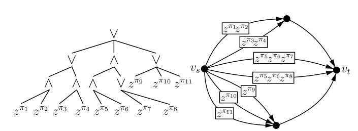

I am a roboticist specializing in motion planning and control for legged locomotion. I earned my Ph.D. in the Robotics and Mechanisms Laboratory (RoMeLa) at UCLA, where I worked with Prof. Dennis Hong. I am currently completing a postdoctoral position at the Georgia Institute of Technology, where I've had the opportunity to collaborate with Prof. Ye Zhao and Prof. Sam Coogan.
My first authored papers received the Best Paper Award on Safety, Security, and Rescue Robotics at IROS 2019 and was a finalist for the Best Paper Award at the UR 2024. I am a member of the world championship team for the RoboCup 2024 competition.
During my Ph.D., my research focused primarily on the hardware aspects of robotics, including the development of wall-climbing robots, grippers, and humanoids. In my postdoc, I have shifted toward creating general robotics frameworks for motion planning and control. My current research centers on developing algorithms that learn constraints from mistakes applied to robotics systems. We investigate learning constraints to accelerate hybrid motion planning and model predictive control (MPC), tighten convex relaxations of mixed-integer formulations such as the graph-of-convex-sets (GCS), warm-start task and motion planning (TAMP) under temporal logic constraints, and more.
To illustrate this distinction, I categorize my research into two columns: "Theoretical" and "Applicative." In the "Theoretical" column, I show the data structures, optimization formulations, and toy problems that underpin general frameworks. In the "Applicative" column, I showcase real robots in action.
We propose a hybrid motion planning and control framework based on Generalized Benders Decomposition that controls a cart-pole system with randomly moving soft-contact walls reaching speeds 2-3 times faster than Gurobi, oftentimes exceeding 1000Hz.
Xuan Lin, Jiming Ren, Samuel Coogan, Ye Zhao arXiv, 2024
|
paper /
code

We propose Logic Network Flow, an innovative optimization formulation for motion planning under temporal logic constraints. Synthesized with Dynamic Network Flow, our framework accelerates the computation by tightening the convex relaxations.
Xuan Lin, Gabriel Fernandez, Dennis Hong UR, 2024, finalist, Best Paper Award
|
paper /
code
We compare the data-driven performance of two MIBLP reformulations: mixed-integer programming (MIP) and mathematical programming with complementary constraints (MPCC). This evaluation is conducted on a book placement problem featuring discrete configuration switches and bilinear constraints.
Xuan Lin, Jiming Ren, Samuel Coogan, Ye Zhao Ongoing work, 2024
We demonstrate task and motion planning for time-critical search and rescue tasks using humanoid robot teams inside a realistic battlefield simulation environment using MuJoCo.
Yusuke Tanaka, Xuan Lin*, Yuki Shirai*, Alexander Schperberg, Hayato Kato, Alexander Swerdlow, Naoya Kumagai, Dennis Hong (*equal contribution) IROS, 2022
|
paper
We introduce SCALER, a quadrupedal robot that demonstrates climbing on bouldering walls, over-hangs, ceilings and trotting on the ground with payload capacities 233 % of its own weight on the ground and 35 % on the vertical wall. The first author received the IROS 2022 SICE International Young Authors award. Congrats!
Xuan Lin, Jingwen Zhang, Junjie Shen, Gabriel Fernandez, Dennis Hong IROS, 2019, Best Paper Award on Safety and Rescue Robotics
|
paper
We introduce SiLVIA, a hexapod robot that demonstrates climbing between two walls with bare foot and planned motion, the first robot to demonstrate such capability.

{kind=link}